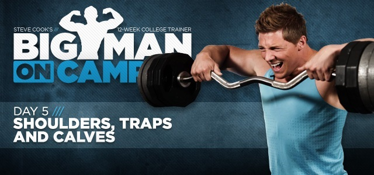

Big Man On Campus: Week 1, Day 5
Today's lesson is all about building big traps and shoulder caps. Steve Cook will teach you the best way to get big.
Listen up, Big Man: In your busy schedule of classes, work and chasing girls, you need to make time to train your shoulders. No physique is complete without big shoulders and defined traps.
Sure, you trained yesterday, but your shoulders don't care if your legs are sore. That's why we're going to hit your delts heavy and hard. Let's grow.
Shoulders/Traps/Calves
Cardio Warm-up : 5 minutes
Exercises
NOTE: Increase weight on each working set of each exercise.
Dumbbell Shoulder Press
3 sets of 12-16 reps, 60-90 seconds rest
Drop set on last set
Side Lateral Raise
3 sets of 10-12 reps, 30-60 seconds rest
Triple drop set on last set
Reverse Pec Deck Flyes
5 sets of 10-14 reps, 30 seconds rest
Superset
Front Raise
3 sets of 10-14 reps
Upright Barbell Row
3 sets of 10-14 reps, 60 seconds rest between supersets
Calves
NOTE: Important to use strict form. Achieve a full stretch at the bottom and hold at peak contraction.
Standing Calf Raises
4 sets of 10 reps, 30-60 seconds rest
Donkey Calf Raises
4 sets of 10 reps, 30-60 seconds rest
Drop set on every set
Seated Calf Raise
4 sets of 15 reps, 30-60 seconds rest